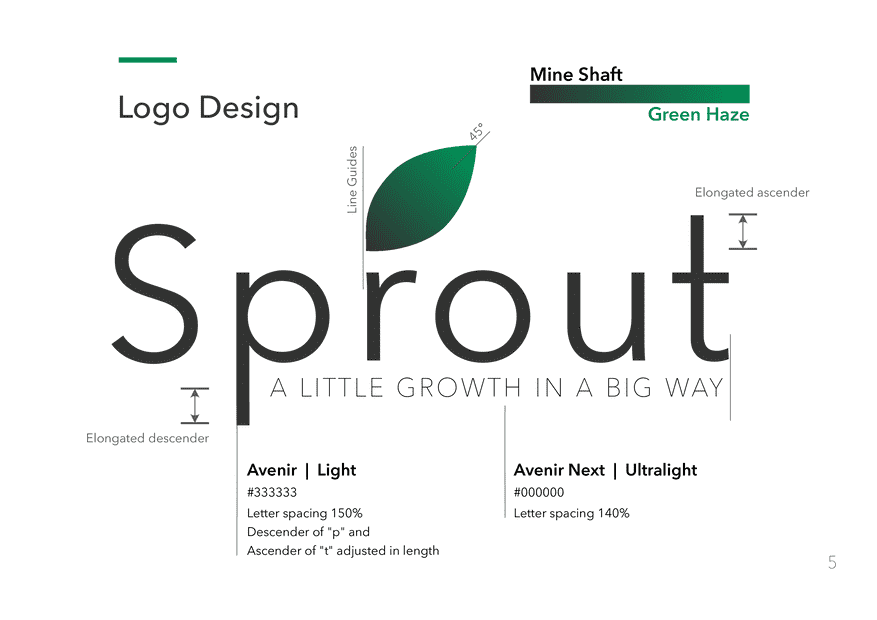
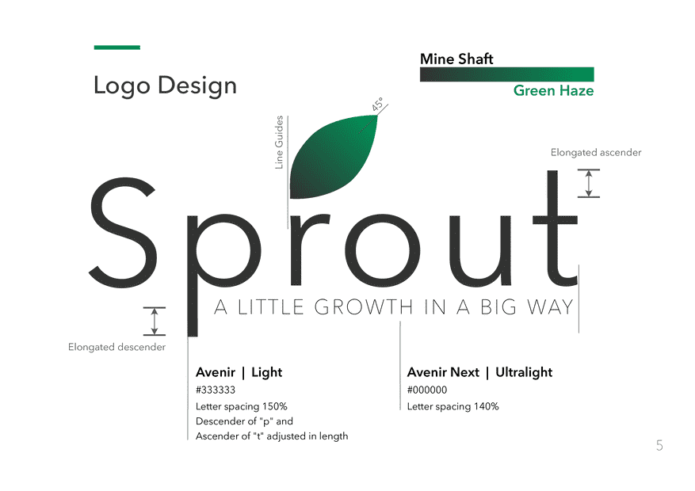
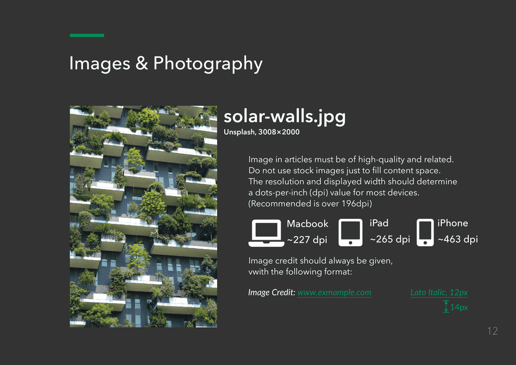
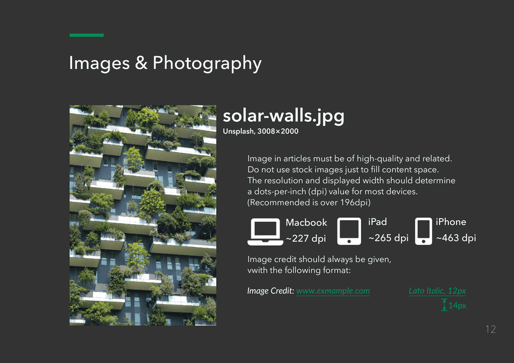
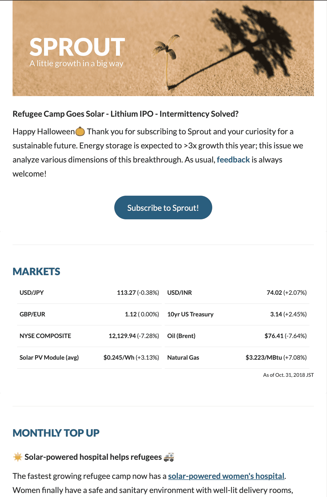
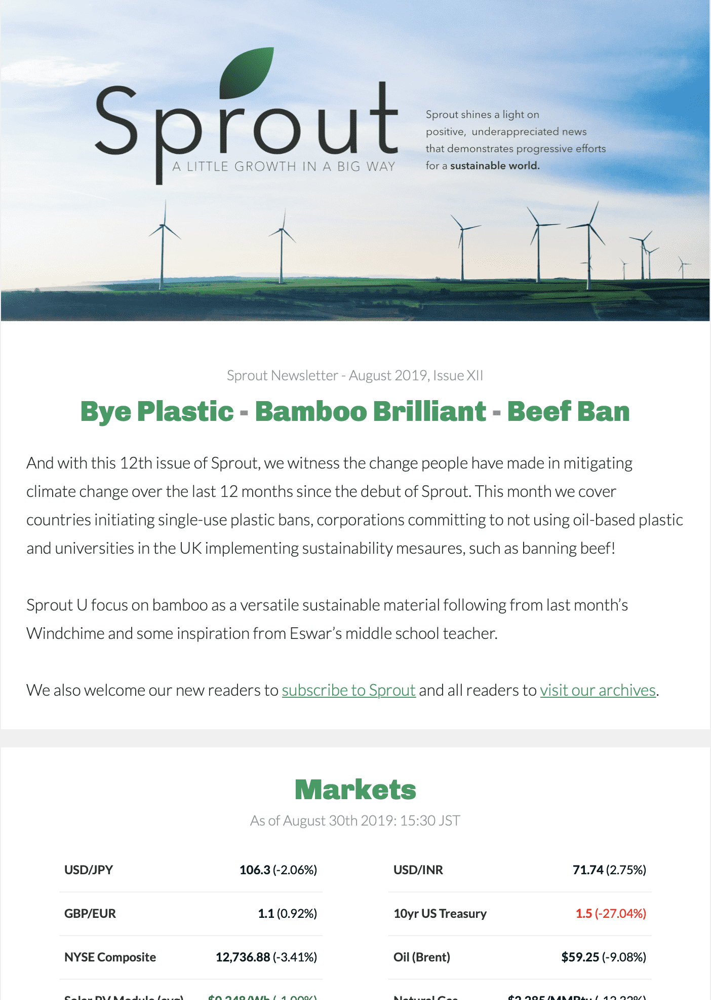

孫 驃炅 Kye Son
 한국어
한국어
 English
English
情報科学 ・ 数学 | プロジェクト
Exploration of Fundamental Mathematics via Implementation of Common Axiom Systems and Proof Generation
情報科学 ・ 数学 | 技術
Swift & iOS
アプリ開発
HTML & CSS
フロントエンド開発
Wolfram
Mathematica
& Language
Linux
サーバーシステム管理
その他 C・Java・Python・Wolfram Language・Swift・HTML & CSS・Bash
作文 | リサーチ
The Reflection of Renaissance Humanism in East Asian Philosophy from an Artistic, Medical, and Musical Perspective of Korea
The Myth of Meritocracy and False Hope in Korean College Admissions and Preparation
羅生門 Alt.
ブログはMediumへ。 Medium
デザイン
 

Sprout ニュースレター デザイン担当
デザインガイド
 



ニュースレター


Before
After
